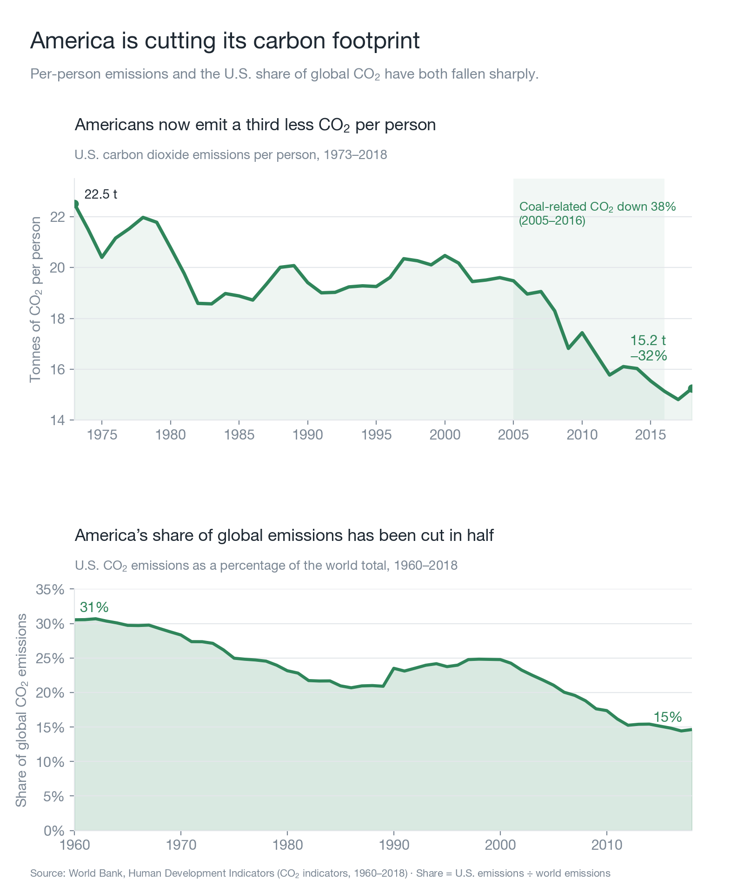
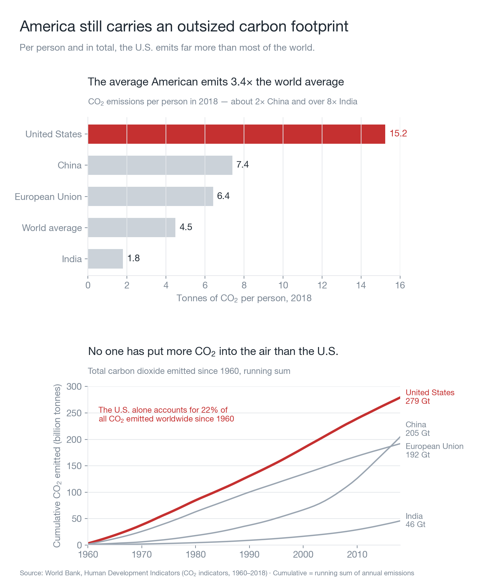

Proposition: The United States is making real progress on cutting its carbon emissions.
Both visualizations use the same dataset: Human Development Indicators, 1960–2020 (World Bank), specifically its CO₂ emissions indicators, which run from 1960 to 2018. There is one visualization for each side; following the assignment’s broad definition of a visualization, each one is a single figure made of two concatenated charts under one headline. Scores use the assignment’s scale from −2 (fully deceptive) to +2 (fully earnest).
FOR the Proposition

Design Decisions and Rationale:
- Starting the per-person chart at 1973 (−1.5). 1973 is the highest U.S. per-person value in the dataset (22.5 t), so measuring from it produces the most impressive possible drop (−32%). I considered starting at 1960, the first year of data, but U.S. per-person emissions were 16.0 t then, so the 2018 value (15.2 t) is only about 5% lower. That reads as stagnation, not progress. Choosing the peak as a baseline is one of the most common cherry-picking moves, which is why I score it as strongly deceptive even though every data point is real.
- Truncating the y-axis at 14 tonnes (−1). Starting the axis just below the lowest value stretches a one-third decline to fill almost the entire chart height, so the line appears to plunge. A zero-based axis made the same data look like a gentle slope. The tick labels are still accurate and visible, so a careful reader can catch it on a second look, which keeps it subtle rather than egregious. I also lightly shaded the area under the line down to 14 t, which visually suggests that 14 is the floor.
- Normalizing by population (+0.5). Tonnes per person is a standard and defensible metric, which makes the chart feel trustworthy. However, the U.S. population grew 54% between 1973 and 2018, so a per-person decline can coexist with flat totals. In fact, total U.S. emissions in 2018 (4.98 billion t) were slightly above 1990 levels (4.84 billion t). The normalization is earnest in general but selectively useful here, so I scored it only slightly positive.
- Showing the U.S. share of world emissions as a calculated field (−0.5). I divided U.S. emissions by world emissions for every year. The math is correct and the axis starts at zero, so the chart looks very honest. But the share fell almost entirely because other countries grew: U.S. total emissions actually rose 72% from 1960 to 2018 while world emissions grew 3.6×. The chart invites the reader to credit the U.S. for a change it mostly did not cause.
- Coal annotation, green color and confident titles (−0.5). I shaded 2005–2016 and noted that coal-related CO₂ fell 38% over that period (computed from the dataset’s solid-fuel indicator). The figure is true, but placing it over the steepest part of the line implies a policy-driven cause, while the 2009 dip also reflects the recession. Green, “cut in half” and “a third less” all frame the data as a success story, and “now” implies current data even though the series ends in 2018. Each choice is small and factual, which is what makes the slant hard to notice.
AGAINST the Proposition

Design Decisions and Rationale:
- Comparing countries per person (+1.5). Per-person emissions are the fairest way to compare countries with very different populations, and both charts use zero-based axes with direct value labels, so nothing is visually exaggerated. This is the most earnest part of the design, and it is also persuasive: the U.S. bar is more than three times the world average. It was interesting that the same normalization I used to argue for the proposition becomes the strongest argument against it once the comparison is across countries instead of across time.
- Choosing a selective comparison set (−1.5). I only compared the U.S. with China, the EU, India and the world average, all of which emit less per person. Countries that match the U.S. (Canada, Australia and Saudi Arabia, about 15.3–15.5 t) or exceed it (Qatar, Kuwait and the UAE, about 21–32 t) are left out. Including them would make the U.S. look typical of wealthy, energy-intensive economies rather than an outlier. Nothing shown is false, but the omission changes the conclusion, which is why I score it as strongly deceptive.
- Using a single-year snapshot (−0.5). The bar chart shows only 2018, which removes the time dimension entirely. A reader cannot see that U.S. per-person emissions have fallen by a third since 1973, which is exactly the evidence the other side relies on. I considered a small sparkline per country but decided it would invite the very comparison I wanted to avoid.
- Showing cumulative emissions as a running sum (+0.5). Cumulative CO₂ is genuinely what drives long-term warming, so this transformation has a strong scientific justification. However, a running total can only go up, so recent U.S. reductions are invisible, and it hides that by 2018 China emitted about twice as much as the U.S. each year (10.3 vs 5.0 billion t). Starting at 1960, where the dataset begins, also understates the U.S. lead, since much earlier industrialization is not counted. The design is earnest in what it measures but strategic in what it leaves out.
- Red highlight and blame-framed annotations (−0.5). The U.S. is the only element drawn in red; every other country is muted grey, so the eye goes straight to it and reads it as the problem. The annotation “The U.S. alone accounts for 22% of all CO₂ emitted worldwide since 1960” is accurate (279 of 1,281 billion t), but “alone” assigns responsibility. I kept the language restrained, avoiding words like “polluter”, because charged wording would make the slant easy to detect.
Final Reflection
The most surprising part of this project was how little I had to change to flip the argument. Both visualizations use the same World Bank dataset, the same per-person metric and, in places, the same years, yet they reach opposite conclusions. The difference came from comparison (across time versus across countries), baseline (the 1973 peak versus a zero axis) and framing (green and “cut in half” versus red and “alone”). The “for” side was harder to make persuasive without being obvious, because the honest version of the U.S. per-person line is fairly flat since 1960. I had to lean on a cherry-picked starting year and a truncated axis, which made me uneasy, since those are exactly the techniques a careful reader would catch. The “against” side came more naturally, partly because I find it more convincing, and partly because its strongest choices were earnest ones.
What made this difficult is that almost every decision sat somewhere in the middle of the scale. Per-person normalization is good practice, but I used it in both visualizations to support opposite claims. The share of world emissions is a simple, correct ratio, but it credits the U.S. for other countries’ growth. Cumulative emissions are the right measure for warming, but they erase recent progress by design. I could rarely point to one element and say “this is the lie”. The deception was usually in which true facts were selected and what they were placed next to, rather than in any single number.
I now think of ethical analysis and visualization as making sure a reader would reach roughly the same conclusion if they had access to the full data. A persuasive choice feels acceptable to me when it emphasizes something real and the reader could still check it from what is on the page, such as highlighting the U.S. in a comparison or annotating a true statistic. It becomes misleading when it depends on information being hidden: a baseline chosen only because it flatters the result, an axis that distorts proportions, or a comparison set that leaves out the cases that would change the answer. The line is not perfectly sharp, but asking “what would the reader conclude if they saw what I left out?” is the most useful test I found.